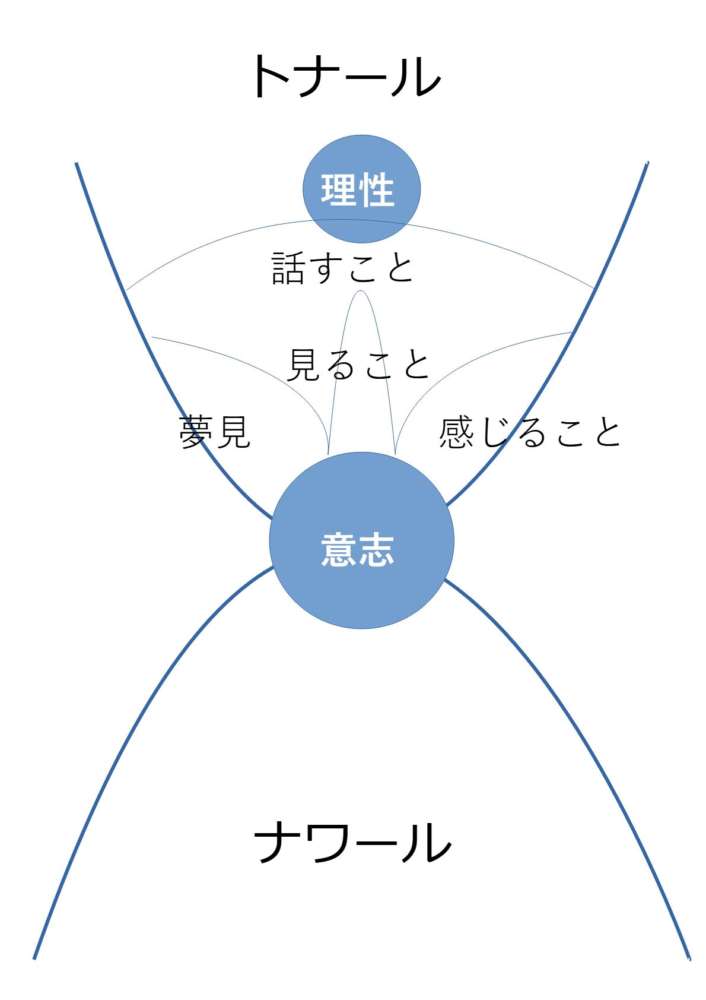

ナワリズム
知覚の泡 意識 忍び寄り 夢見 意図 エネルギー 「呪術の飛翔」より 心に残る言葉| 知覚の泡 | ||

| 知覚の泡 | 人間の知覚の泡は上の図のように構成されている。最初知覚の泡は開いているが、しだいに閉まりはじめ、大人になるとトナールに閉じ込められてしまう。普通の人間は理性でしか知覚しないが、戦士はトナールの島を片付けることによって、知覚の泡が開き、泡の反面は意志で占められるようになる。 |
|
| トナール | この現象世界。海に浮かぶ島のようなもの。人の誕生で始まり、死をもって終わる。トナールが縮むと、ナワールが優勢になり、異常なことが起こりうる。強いトナールは縮みやすいトナールで、内部の対話を止めたり、自尊心や執着をなくして、トナールを掃除してきれいにすることによって、それが可能になる。 | |
| ナワール | 言葉ではあらわせないもの。ナワールは力であり、トナールを創造する。我々が死ぬと、感覚、実在、自己などといったすべてのものが、ばらばらになってナワールの中を漂よう。死とともにあらゆる個々の認識が分離して、それらがやってきたところすなわちナワールに戻る。 | |
| またドン・ファンやカスタネダのような呪術師のリーダーになる資質がある人をナワールと言うこともある。ナワールは並外れたエネルギーを持った人で、ナワールをエネルギーとして見ると、普通の人のように１つの輝く球ではなく、縦に重なり合った2つの輝く球体として見える。それゆえにナワールは二重構造をしている者とも呼ばれる。 | ||
| 理性 | 理性では、トナール(肉体、現実世界)のみを認識できる。理性というのは連合のひとつの状態、あるいは単なる集合点の位置の結果である。理性は「話すこと」とにつながっている。 | |
| 意志 | 臍の下の見えない開口部から放出される力。からだの中央からの力の噴出として体験される。意志は理性とは対極の位置にある。大人になり理性が発達するにつれて、逆に理性にとらわれるようになり、意志は使えなくなる。しかしトナールを掃除してきれいにすることにより、意志が使えるようになる。意志は「夢みること」「見ること」「感じること」」とつながっている。 | |
| 夢見ること | 夢見ることとは、幽体離脱のことである。意志とつながることによって幽体離脱をして、多次元世界を知覚できるようになる。 | |
| 見ること | すべてはエネルギーであり、宇宙全体がエネルギーである。エネルギーをエネルギーとして見て、感じることを、呪術師は見ることと呼んでいる。高められた意識状態にあるとき、人間の体はエネルギーを流れとして、気流として、風のような振動として、感じることができる。 | |
| 感じること | 感じることとは、真理を直感することである。意志とのつながりができると、物事の真理が、直感としてわかるようになり、思い通りに物事が進むようになる。 | |
| 内的沈黙 | 普通の人間は理性によってがんじがらめにされていて、意志を使えない。内部の対話は集合点を理性の位置に固定するものである。それゆえ内部の対話を止めて、内的沈黙の状態に至ることが呪術の鍵となる。内的沈黙が得られると、集合点を特定の位置に縛りつけているものがこわれはじめ、それが自由に動き出す。内部の対話を止めて内的沈黙に至るためには、そうするように意図することが必要である。内的沈黙に至ることを”世界を止めること”ともいう。内的沈黙の最中に働いているのは、その人間を魔法の存在たらしめている別の能力（意志）である。内的沈黙によって最終的には「沈黙の知」という意識のレベルに到達することも可能である。内的沈黙は集められて蓄積されていくので、まず内的沈黙の核を作って、そのあとで訓練するたびにその核を徐々に大きくしていくのようにすればいい。 | |
| 意識 | ||
| イーグル（意識の暗い海、無限） | あらゆるものの源になっている漠然とした力。人に意識を授け、人が死ぬときに放棄する豊かな意識を食いつくす。 | |
| イーグルの放射物 | 宇宙の本質は我々が考えているような物の世界ではなく、実際はイーグルから放射される光のエネルギーフィールドが無限に集積したものである。イーグルの放射物は時間でできていて流動性をもっていてけっして静止せず変わることなく永遠のものである。人間も同じように卵のようなまゆの中に入ったイーグルの放射物でできている。その光の繊維には自覚があって、活きていて、振動していて、量は無数にあり、ひとつひとつがそれ自体で無限のエネルギー源になっている。それはある存在、複合体、目がくらむような圧力とでもいうようなものである。 |
|
| 呪術師の見え方 | 見る人が人間を見ると、普通の人は白味が強い薄黄色の光がまゆに囲まれた卵型に見える。呪術師の光の色は琥珀色で卵型ではなく両端が丸い墓石みたいに見える。呪術師には夢見る者と忍び寄る者がいるが、夢見る者を見ると、からだの中央部に髪のように細い繊維のエプロンをもった者として映る。忍び寄る者を見ると、エプロンのようなものをもっているが、それは繊維ではなく無数の小さな丸い突起物でできたものとして映る。 | |
| 連合 | 生き物のまゆのなかのイーグルの放射物が、それにぴったりする外のイーグルの放射物と連合することにより知覚（意識の輝き）が生まれる。イーグルの放射物はそのひとつひとつが無数のエネルギー源になっているが、生き物のまゆは、その内部にある放射物を外部の放射物から隔離しているから圧力を導くことになる。意識は外部の放射物がまゆの内部の放射物に加える永久の圧力とともに始まる。生き物のまゆの内部の放射物はまゆを破って死のうと闘っているが、その意識によって内部の放射物の動きを止め、死を止めている。 | |
| 集合点(意識の輝き） | 連合のために内部と外部の放射物を選択する集合点と呼ばれる仲介物がある。集合点は輝く磁石のようなもので、人間内部の動いている放射物の束をつまみだしてまとめる。こうした束が、外部の放射物と連合する。 | |
| 集合点の移動 | 人間の内部のエネルギーフィールドのうちのひときわ眩しい一点が、その周りに光を照らし知覚を生じさせる。この輝きを集合点(意識)といい、集合点は人間の表面上の他の場所や内部に移動しうる。集合点を別の場所に移動させると、まゆの内部の新しい百万もの輝くエネルギー糸の束がそこに集まるので、普段使われていないエネルギーフィールドの束を輝かせ、それを利用することができる。集合点を移動させれば、外部の別のエネルギー繊維がそれを貫くことになって、日常世界とは異なる世界を知覚することができる。ある限界を超えて移動した集合点は、われわれが知っている世界とはまるで違った世界を組み立てられる。呪術師の行うことはすべて彼らの集合点の移動の所産である。集合点の移動は、彼らが自由にできるエネルギーの量によって左右される。また他に集合点を移動させる方法としては、ドラッグ、空腹、疲労、ストレスの状態に身をおくこと、そしてとりわけ夢を操ることがある。 |
|
| 性エネルギー | 性のエネルギーを通してイーグルは意識を授ける。性行為のあいだ雌雄それぞれのまゆの内部の放射物は深い興奮を経験し、その頂点で二つのまゆに隔てられていた意識の輝きが混ざり合い融合する。そして、そのまゆの内部の放射物が新しい生命に意識を授けようと最善をつくす。また性のエネルギーは夢見をつかさどるものであり、戦士は自分の性エネルギーを管理しなければならない。性エネルギーの管理とは、性エネルギーを節約して、それが流れる道すじを再開発することである。 | |
| 注意力 | 人間は成長とともに、外部の放射物との連合を通して内部の放射物が輝き出し、放射物が劇的に輝くことにより外部の放射物と溶け合う場合もある。注意力とは生きているという過程を通して意識が強化されることである。 |
|
| 第１の注意力 （トナール） | 肉体や日常世界の集合点の位置で右側の意識とも呼ばれる。人間のまゆの表面に固定された放射物の輝き。テニスボールの大きさで輝く球のなかに常駐し、右肩甲骨からニフィート背後にある。ふつうの人間は第１の注意力にエネルギーをすべて使われてしまっていて、第２の注意力に到達することはできない。 |
|
| 一覧表 | 人間以外の生き物はまゆの内部の放射物と外部の放射物を連合させて、内部の放射物を沈静させる。人間の場合は、その代わりに第１の注意力が自分のまゆのなかにある放射物の一覧表を作る。人間は一覧表を作ることによって、外部の放射物の刺激を無視することができるようになる。それは理性と呼ばれ理性的な人間はまゆの内部の自然な興奮を鎮めるので長生きする。逆にこの一覧表を使って、外部の放射物の刺激を利用してより大きな興奮をつくり出すこともある。これを自己陶酔と呼び自己陶酔型人間は、寿命を縮めることになる。 |
|
| 第２の注意力 （ナワール） | もうひとりの自分(エネルギー体）の集合点の位置。第2の注意力は左側の意識とも呼ばれている。まゆの内部の、使われていない放射物が使われるときに現れる。第2の注意力がみずからを集めるところは、ほぼ胃とヘソの中間点の前方1.5フィート、そこから4インチ右寄りのところにある。日常世界の固定された第1の注意力に比べると、はるかな大きな領域であり、膨大な数の新しい集合点の位置があり、別の多数の世界の意識（集合点）に固定することができる。呪術師の熟練とは、意識の輝きをまゆの表面にある第1の注意力からまゆの内部にある第2の注意力に拡げることである。注意力を発達させた者は、意識の輝きに深みがあるので、その輝きをまゆの表面からまゆの内部の多くの放射物へ伝達させられる。第２の注意力は戦士の戦場であり、第3の注意力へ到達するための訓練場のようなものである。 | |
| ナワールの一撃 | カスタネダはしばしばドン.ファンに背中を叩かれることにより、集合点が移動して高められた意識へ移行した。ナワールが強烈に輝く集合点を押すと、集合点はまゆの内部に移動して、まゆにへこみが出来て、まゆの内部の不活性な放射物を照らし出す。人間はエネルギーを産み出す有機体でエネルギーの泡である。だから普通の人よりエネルギーを多くもったナワールが他人や自分のエネルギーの泡にへこみをつくることは可能である。このナワールの一撃により、肺の空気がすべて外へ出てしまい、その肺を空気で満たすには思いっきり吸い込まなければならない。その呼吸が重要なものだと信じられていた。 | |
| へこみ | ふつうは意識の輝きがあるのは、人間のまゆの表面上だが、ナワールの一撃により集合点がまゆのなかに動き、それはすぐに輝きのなかにへこみをつくる。ヘこみが出来ている間は、そのへこみは戦士の集合点のすみかになり、まゆの表面からまゆの内部の多くの放射物に意識の輝きが伝達される。 | |
| 集合点の固定 | 人間の集合点がまゆの特定部分に現れるのは習慣、すなわち繰り返しの行為によって決定される。まずわれわれが、そこに集合点を定着せよと命令する。われわれの意識の輝き（集合点）が特定の放射物を強調すればするほど集合点はより安定してくる。われわれの命令はイーグルの命令になり、集合点はそこに固定される。 |
|
| 裂け目 | へこみは一時的なものであるが、裂け目は永久的なものである。意志はへその下にある裂け目から噴出する。意志を発達させるに従って、裂け目が開いていく。通常は裂け目はこぶし程度の大きさだが、病気などで集合点が変わり、裂け目が人間のまゆの幅いっぱいにひろがると、その人間は死ぬ。人間のまゆの中に眠っていた使われていなかったイーグルの放射物は、死の瞬間に裂け目から一斉に解き放たれ、生きている者は想像もつかないような力で押し流される。 |
|
| 地球の応援 | 地球も人間と同じようなまゆを持った感情をもった巨大な生き物である。地球の応援により自分自身の集合点を移動するのに利用することができる。地球には、有機的な生き物についても非有機的な生き物についても、あらゆる感情をもった生き物のなかにあるすべての放射物がある。戦士は自分のまゆの内部の放射物と地球のまゆの内部の放射物と連合する事により、その連合を限られたしかたで利用し、その世界を知覚することが可能になる。内部の対話を止め続けて、力をためて、平静な状態になることにより、それが可能になる。 | |
| タンブラー(ころがる力） | 人間の裂け目にたえまなくころがってくる火の輪。イーグルが保護のために生と意識を配分する方法でもあり、同時にあらゆる生き物を死なせもする。タンブラーが何度も何度も裂け目にぶつかり、その裂け目が広がり、まゆの幅いっぱいにひび割れを生み出すとその人は死ぬ。ある呪術師はころがる力を集合点を移動させる手助けにすることができる。自分たちのまゆを開き、力を自分のなかに導き入れて満たした。そうすることによって全体意識を獲得した。 | |
| 人間の鋳型 | 人間のまゆの内部にしか現れない放射物の巨大な束で、人間としての特質を刻みつけるのに役立つエネルギーのパターン。集合点を移動して人間の鋳型を見ると、天国のような温かい琥珀色の光として見える場合と、輝く人間として見える場合がある。 | |
| 第２の注意力に入る修行法 | 第２の注意力（夢見）は、集合点に対する第1の注意力の支配を解除することによって、すなわち第1の注意力をしないことをとおして活動化、ないしは利用される。、第1の注意力をしないこととは、具体的には内部の対話止めて内的沈黙の状態に至ることである。もしくは、同じもの（例えば葉のようなもの）をずっと見続けたり、単調なことばと複雑な動きのくりかえしという儀式的な行為も、それが反復的なものであるがゆえに、第1の注意力に一覧表を見ることからエネルギーを解放させる効果がある。あるいは、目の焦点を、第2の注意力の位置の先端に合わせるといった方法がある。第２の注意力は集合点の移動の副産物であるので、自然に発生することはなく、集合点を移動するという意図を持つことが必要である。 | |
| 第３の注意力 | 第２の注意力は人間のまゆの内部にあるイーグルの放射物を１束ずつ燃え立たせた時に起きるが、第３の注意力は人間のまゆの内部にあるすべてのイーグルの放射物を燃え立たせるときに得られる全体意識。もし集合点が未知の境界線へとつねに移動させられ、なおかつ既知の限界へと引き戻されると、それが突然解放されたときに稲妻のように人間のまゆを横切って移動し、一度にまゆの内部の放射物を意志の力で連合させることができる。からだ全体が知に輝き、ひとつひとつの細胞が自分に気づきはじめ、またからだの全体性にも気づきはじめる。相当数のエネルギー・フィールドが明るいまゆの内側で輝きだすときには、呪術師はエネルギー・フィールドそのものを見ることができる。内部からの炎が彼らを食い尽くし、意識は全開になる。人間の殻の境界（まゆ）は溶解して内部の放射物はありとあらゆるものを超えて伸びていき、外部の放射物と融合して、永遠へと滑り出していく。まゆのなかのすべての放射物を燃え立たせてしまえば、肉体ごと一瞬のうちにいなくなる。戦士のなかから自尊心がすっかりなくなり無にになったときだけ全体意識はやってくる。人は第三の注意力に入ることにより、ふつうなら死の瞬間に失う意識を死んだ後も保持することができる。 | |
| 最後の旅 | 意識はイーグルによって貸し与えられたものであり、人間は死ぬと意識をイーグルに返さなければならない。人間の最高の業績は、チラチラする光のように食われるべくイーグルのほうへ動いていく解体した意識にならずに、生の躍動を保ったまま第3の注意力へ達することである。呪術師は、夢見の修行をしたり、反復の修行をすることによって第３の注意力に入り、意識をイーグルに返すことを回避することができる。すなわち、われわれの肉体の個々の部分が統一して、肉体はそっくりエネルギーに変わり、意識はもってるが肉体をもっていない存在に進化することができる。非有機的存在と似ているが、形態が異なり、明るく光り輝き、丸いエネルギーの形態になる。そして意識の暗い海（無限）を旅する。それを最後の旅という。 | |
| 忍び寄り | ||
| 忍び寄り (集合点の固定) | 第１の注意力（日常生活の意識）での戦士の修行方法。争いや欠乏、緊張といった劇的な環境の変化によって、集合点が移動した時、正常な状態に戻るのを切望するかわりに、その位置に集合点を固定して、呪術師が行う行動原理。日常生活の型にはまらない異常なふるまいは集合点に振動を生じさせ、そのふるまいが体系的なやり方で、うまく導かれて実行されれば、最後には集合点を動かせる。忍び寄りは集合点をわずかずつ、しかし着実に動かし、そうして戦士に自分自身を強化する可能性を与える。 | |
| 忍び寄りの技 | 忍び寄りに熟練すると、目で他人の胸を圧迫するなどの気功法のような技を使えるようになる。 | |
| 忍び寄りの７つの原則 | この７つの原則を適用することにより、戦士は、けっして自分自身を深刻に考えないこと、限りない忍耐力を持つこと、即興でなにかをする能力を身につけることを学ぶことができる。 | |
| 第１の原則 | 戦士は自分の戦場を選ぶ （準備をする） | |
| 第２の原則 | 不必要なものをぜんぶ捨てる | |
| 第３の原則 | どんな闘いでも、それには命がかかってる | |
| 第４の原則 | 楽にして、自分を捨て、なにも恐れない | |
| 第５の原則 | 手に負えないものごとに直面したら、戦士はしばらく退却する | |
| 第６の原則 | 戦士は時間を圧縮する | |
| 第7の原則 | 戦士は自ら一番前には出ない | |
| 忍び寄りの４つの基礎 | 非情さ、校滑さ、忍耐強さ、やさしさ。これらは呪術師が集合点を新しい場所に移動したときに利用できる４種類の強さである。 | |
| 不屈の意志 | 曲がることのない意図（目的意識）と持続する努力が戦士の基本的な特質である。集合点が常ならぬ場所に固定されたとき生じる力で、戦士の集合点を動かすことができる。つまり彼らの変わらない決心が、自分たちの集合点を新たな位置に押し出す触媒になり、そしてまたその位置が不屈の意志を生み出す。 |
|
| 反復 | 自分の人生の生活の細部まで思い出す修行。反復によって、集合点は現在の位置と反復されているできごとが起きたときの位置とのあいだを往復する。反復における鍵となる要素は呼吸である。呼吸はエネルギーを集めて循環させるからである。呼吸に集中すると、固体である肉体を消し去り、柔らかな霊的部分だけを残すことができる。顎を左右にまわしながら、ゆっくり呼吸する。そして伸び縮みする長い繊維が何本か体の中央部分から外に向かって伸びているように感じて、時空を超えて過去の出来事に、このエネルギー繊維を伸ばすようにする。そして思い起こした全ての状況を吸い込みようにして、過去に残してきた自分のエネルギーを回収する。このエネルギー繊維はエネルギー体の一部で、この繊維を使ってエネルギーを誘い出せば出すほど、エネルギー体は強くなっていく。今までの人生の完璧な複製物をつくるまで反復すれば、死後も意識を保持することが可能である。反復によって、呪術師は人生経験と生命力とを分離するだけの支配力を獲得することができる。イーグルが欲しているのは人生経験であり、その人生経験を通して高めてきた人間の意識なので、イーグルは人間の生命力を奪う代わりに、その代用物である完璧な反復を受け入れてくれるということがあるからである。完璧な反復は夢見のからだと同じくらい戦士を変えることができ、第３の注意力へ入っていくところへ導いてゆく。 | |
| 履歴を消す | 自尊心をなくすこと。死を助言者として役立てること。自らの行動に責任を負うこと。この三つの技術で、戦士は履歴（それによって個人が社会に縛られているもの）を消す。 |
|
| 自尊心をなくす | 自尊心は大量のエネルギーを消費するものなので、呪術師はそれをなくそうと努力している。自尊心をいくらか手放すことにより、第２の注意力に入るための充分なエネルギーを供給することができる。 | |
| 死を助言者とする | 普通の人間は死後の世界に漠然とした期待を持っていて、不死ではないのに不死であるかのごとくふるまっている。呪術師が普通の人間よりも有利な点は、自分が死にゆく存在であるのを知っていて、それを片時も忘れないことである。自分の死についての考えこそがこの世でもっとも真摯な考えである。呪術師は死の概念を、自分自身に揺さぶりをかけて忍び寄るために使う。 | |
| 責任を持つこと | 自分の決定を支えるために自分の人生を賭け、その決定を実現するために最善を尽くすこと。戦士にとって自分自身で決断した事は自分自身の責任であるので、それについては疑ったり後悔したりはしない。 | |
| 人型(人間の形） | ふつうの人間の集合点が固定されている場所で、放射物の連合がもつ強制的な力。人間の慣習などで歪められたエネルギーの場。 | |
| 超俗（人間の形をなくす） | 戦士たちの活動によって、集合点は左に向かって漂いはじめ、放射物が新しい連合をする。それは永久的な動きで、集合点が元の位置に戻ることはない。それは普通ではない超然とした感覚を生み出す。超俗を身につけた戦士は他人に影響されることはない。 | |
| 小暴君 | 例えばパワハラの上司など他人を苦しめ不幸を与えたり、他人をいらだたせる人を小暴君という。戦士は管理、訓練、忍耐、タイミングという戦士の四つの特質を使って戦略を練って小暴君に立ち向かう。戦士は小暴君を、忍び寄りの原理を使い、自らの集合点を移動させるのに利用する。 | |
| 管理された愚行 | イーグルが最終的なものであり、人々がすることは愚行であると理解している戦士が社会環境を扱う方法。戦士は愚行である行為も全力で行動するが、その行為の結果にはこだわらない。意図することにより外見をつくりだし、役者のように行動すること。 | |
| 完全無欠の生活 | 無欠性とはエネルギー・レヴェルのもっとも有効な利用法である。不必要の習慣を全てやめて、エネルギーを適切に使い、節約すること。自己憐憫（自尊心）をなくす事。そしてとりわけ、内省をなくすことが要求される。完全無欠の生活により、戦士はエネルギーを蓄えることができる。 |
| 夢見 | ||
| 夢見 | 集合点の左側(内側)への移動が夢を生み出している。奥深く移動すればするほど、夢はより鮮烈に、より奇怪なものになる。夢のほとんどは日常世界の認識作用である心像にすぎないが、中にはエネルギーを生み出す諸要素から成る夢もある。これらは宇宙を流れるエネルギーを見ることができる夢である。夢を見ている時に、その集合点の位置を固定することによって、通常の夢を夢見にすることができる。夢見のなかでは左右の意識がいっしょにくるまれている。その両方がひとつの束になって、第2の注意力のへこんだ中心に休みにくる。人間は玉ねぎのようにいくつもの層からなっていて、その層が分離すると死ぬ。夢見は層の重なりを締める。日常的な世界でするのと同じように夢のなかで行動し第２の注意力を第１の注意力がもっているレベルまで高めると、夢見のなかでつくられたもうひとつの自己がうまれる。ふたつの注意力をしっかり結びあわせた呪術師は死なない。夢見によって集合点を系統的に移動させることによって、知覚を解放し知覚できる領域を拡大させることができる。夢見は知覚できる他の世界のドアを開けるばかりでなく、覚醒した意識でその領域に入る準備をさせるものなのである。 | |
| 夢見の注意力 | 夢見の注意力とは集合点を夢のあいだに移動した位置へ固定する能力である。夢の内容を持続的に調べる事により夢見の注意力を鍛えることができる。夢見の注意力は夢の内容を認識する状態であり、第２の注意力は完全な世界を認識する状態である。夢見の注意力は第２の注意力への扉であり、第２の注意力は大洋の如し、夢見の注意力はそれに注ぐ川の如しである。 | |
| 不眠から通常の夢へのプロセス | ||
| 静的な不眠 | 五感は眠っているような状態になるが、意識ははっきりしている状態。この状態で目を開けたり、からだの中心を使って自分を押し上げたりすることによって、夢見（幽体離脱）に移行できる。 | |
| ↓ | ||
| 動的な不眠 | 静止した絵画のような三次元の絵が見える。 | |
| ↓ | ||
| 受動的な目撃 | 夢のできごとのプロセスを目撃する。 | |
| ↓ | ||
| 動的な活動 | 夢の中で、自分が行動する。 | |
| 第一の門 | 夢見の第一の門に到達することはエネルギー体に到達することである。エネルギー体を維持する基盤はエネルギーだけにある。エネルギーというのは蓄積していくものである。完璧な生活をしていればそれが必然的に平静の感覚へ導いてくれ、集合点が移動して、エネルギーを蓄えることができる。呪術師は普段の生活から余分なエネルギーを切り取って夢見の為に利用する。もっとも効果的なのは”自尊心をなくすこと”である。人間は自尊心に莫大なエネルギーを浪費させられてるからである。からだに充分な第2の注意力が蓄えられているときに、ほんの短いあいだだけ第1の注意力を止めて第2の注意力に替える。そうすることによって、夢見ができる。 | |
| 特定の生命状態を鋳型に入れてつくる | 人の生命状態は人の仕様に合うように鋳型に入れてつくることができる。ただ周りに屈服して生きるのではなく、鋳型に入れて生きていることの自覚をつくることによって、エネルギー体に到達してそれを維持するに足るエネルギーを手に入れる。 |
|
エネルギー体に到達する方法 |
深い眠りに入る前にある感覚を自覚する。その時、エネルギー体に自分が眠りに落ちるのを気づかせるように意図する。自分自身で眠りに落ちるのを意識するのではなくエネルギー体に意識させる。”自分はエネルギー体に到達したのだ、夢見る者なのだ”と自分に確信させる。全細胞を使って自分は夢見る者だと感じる。 | |
| エネルギー体（ダブル） | いわゆる肉体は体と心の両方を含んでおり、その肉体と対になるものとして、呪術師たちはエネルギー体を考えた。エネルギー体には内的沈黙を通して到達できる。エネルギー体は知性ではなく意図にコントロールされる。形はあるが質量はなく、純粋なエネルギーだから一瞬のうちに宇宙の果てまで移動するといったことができる。エネルギー体はエネルギーによってエネルギーを扱う。エネルギー体を使うには三つの方法がある。世界のエネルギーを直接知覚すること。また普通の世界を知覚するように知覚すること。宇宙に存在するエネルギーの流れを自分を上昇させるのに使うことである。 | |
| 第二の門 | 夢見の注意力を鍛え、夢見の中で集合点を固定すると、それが非有機的存在（盟友)の注意を引き、夢に現れることがある。第2の門では、盟友によって引っ張られることによって、非有機的存在の世界に行く。 | |
| 偵察（夢見の使者） | 非有機的存在は、夢見の中で、異質なエネルギーの流れ（偵察）として現れる。偵察を夢見の中で分離して、いっしょに行くぞという意図を大声で表明して彼らを追うと非有機的世界へ行くことができる。危険な偵察もいるので、見知らぬエネルギーに何を望んでいるかを自覚していないかぎり、それを垣間見ることで満足しなければならない。最も凶暴な偵察は夢の中ではよく母親のイメージとして現われる。 | |
| 非有機的存在(盟友） | 地球上にはニ種類の意識体があり、有機的と非有機的な意識体がある。意識は持っているが有機的な生物的体を持たないのが非有機的存在である。両方とも輝く物体で宇宙のエネルギー糸に貫かれているが、かたちと輝度が異なっている。非有機的存在は長くくすんでいて、有機的存在は丸く明るい。また有機的存在の意識と生命は短命で、非有機的存在の生命は無限に永く、その意識ははるかに穏やかで深い。非有機的存在は日常世界では、ほとんどの場合は彼らのの存在は目に見えず骨の髄からくる震えなどとして感じられる。夢見の中では、多くの場合はわれわれの目の前で実体化する。頭の中で以前に夢の中で会った姿を保つことによって、非有機的生命体を呼び出すことができる。非有機的存在に関する秘訣は恐れないことであり、人が彼らに送る意図は、力と自身の意図でなければならない。非有機的存在は優れた意識を使い、夢見るものに大きな吸引力を及ぼし、ことばにできないような世界へやすやす運んでいくことができる。非有機的存在と呪術師は友情の絆を結んで、エネルギーの相互交換をすることができる。 | |
| 第三の門 | エネルギー体を強化する。 夢見のからだ（幽体）は集合点の位置であり、エネルギー体の旅はもっぱら集合点の位置によるものである。エネルギー体がみずから動くことのできる瞬間、呪術師は エネルギー体を完璧なものにするために集合点をその位置に固定する(忍び寄る）ことを意図する。エネルギー体に最適な夢見の位置に移るように意図させ、それからエネルギー体にその位置にとどまることを意図させる。 | |
夢見の技術 |
夢見の中で動いたりするのに必要なエネルギーは、へその下一、ニインチのところから出るので、夢見の中のあらゆる動作はからだの中心を使う。夢見のなかでは、おへそに注意を払う。おへそを何かが押さえるといった感じを持つことによって、夢見の映像を保つのが楽になる。意志によって、エネルギーの源であるからだの輝きを最大限にコントロールできる。またエネルギー体は日常生活にあるものをエネルギーとして見ることができる。夢見のなかで、見る意図を声に出すことによって、それは可能になる。 |
|
| ともに夢を見る | 遠く離れた人同士があらかじめ夢見に入る時間を決めておいて、夢見に入ったら一人が相手の腕をつかむことによって、ともに夢見をすることが可能になる。 | |
| 夢見と集合点 | ふつうの眠りは集合点の移動は人間の帯のどちらかの端に沿って起こる。そうした移動は、つねに眠りと対をなしている。訓練による集合点の移動は眠りと対をなすことはなく、人間の帯の中央部に沿って移動する。その位置が高められた意識からさらに左側(内側)奥深い別の地点まで行くと、夢見のからだの位置になり、ぼんやりした光になる。 | |
| 集合点の固定 | 集合点を夢見の位置に固定するには、エネルギーの凝集力と均一性を磨くことが必要である。凝集力とは自分のエネルギーを球形か卵型に保つことで、凝集力が強いと夢の映像がはっきりする。均一性というのは、同調して集合点を同じ場所に保つことである。均一性と凝集力の再編とは、集合点を別の位置に保ち、それがもとの場所へ戻らないようにすることによって第2の注意力に入ることである。忍び寄りの技は、集合点の固定と関係がある。それゆえ夢見と同じく、忍び寄りの技も重要である。 | |
| 忍び寄るものに忍び寄る | 非有機的存在の影響を回避して非有機的存在の世界から意識的にエネルギーを引き出す方法。まず非有機的存在の世界に行き、その世界に入ったら日常生活の全意識をエネルギー体に移す意図を声に出す。意識の移動は、必要なエネルギーをもっているなら、意図を声に出すことで可能である。他の世界に行く旅には二種類あって、ひとつは別の意識が呪術者のエネルギー体を拾い上げてそれを連れていく旅、もうひとつは呪術師が意識の道を利用しようと自覚的に決定する旅である。そのためには、日常生活で旅をする時に利用する水のように、環境の要素として、エネルギー体での旅で意識を使う。見る呪術師にとって、意識というのは輝きであり、呪術師は自分のエネルギー体をその輝きにからませて出発する。そうすることで、非有機存在のエネルギーを利用するけれども、非有機的存在の影響を回避することができる。 | |
| 第四の門 | 第四の門ではエネルギー体は３つの場所へ旅をする。第1はこの世界の具体的な場所へ旅すること。第2はこの世界の外の具体的な場所へ旅すること。第3は他人の意図のなかにしか存在しない場所へ旅することである。第2の注意力のなかで意図することにより、夢見の中で自分の意図したとおりのリアルな世界を創り出すことができ、他人を自分の意図の世界に引き込むことも可能になる。また第２の注意力の中で意図することで、双子の位置により第２の夢を見ることもできる。 | |
| 双子の位置 | 寝る時の姿勢と同じ姿勢で夢見の中でも寝て、第2の夢を見ること。訓練には右側、左側、背中、腹を下にして眠りに落ちるというそれぞれ４つのヴァリエーションがある。そうすれば夢見を持続することが容易になり、夢見をコントロールすることができる。 | |
| 意識の暗い海の旅 | 内的沈黙をすることによって、意識の暗い海（無限）の上にある旅をさせてくれる位置に集合点が置かれ、肉体ごと別の世界に入ったり、別の場所に移動したりすること。意識が部分的に移動する夢見とは違い、存在ぜんたいをかかわらせるので、自分は現にこの場所にいるという圧倒的な感覚に襲われる。 | |
| 意図 | ||
| 意図の熟練 | 忍び寄り、夢見と並ぶ、戦士の技術の１つ。戦士はまず忍び寄りを学ばなければならない。そのあとで意図を学ぶ。意図との結びつきを確立すれば、戦士は意図することによって思いのままに集合点を動かせるようになり、夢見も確実にものにすることができる。 | |
| 意志 | 腹の裂け目から沸き起こり、からだの中央からの噴出として体験される力。宇宙にあまねく存在する力で、物事を変化させたり整理しなおしたり、あるがままの姿に保ったりする力。精霊とか、抽象とかナワールとも呼ばれ、直感により、人に啓示を与え導く。意志は知覚を引き起こす力である。意識（知覚,集合点）とは、エネルギー・フィールド（人間のまゆの中のイーグルの放射物）の輝きであり、エネルギー･フィールドを輝かせる力は意志と名づけられることになった。つまり意志が圧力をかけ侵入する結果として我々は知覚する。呪術においても、意志（精霊）に触れるだけで、集合点が動き、通常ではない世界を知覚することができる。集合点を静止しておく連合の側面が意志であり、それを移動させる側面が意図である。意志は連合の非個人的な力であり、それが個人に仕える個人化された力に変化したのを意図という。 | |
| 意図 | 意志という普遍的な力が人間の個人的な力に変質したものを意図という。全宇宙に充満している永続的な力であり、呪術師の合図や命令に応えるほどの意識を有した力である。意図する唯一の方法は意図しようとしているものに自分の意図を集中させることである。意図を実現させるにはマニュアルとか手順とかいうものは必要なく、意図を集中させるだけでいい。普通の人は、意志とのつながりがないので意志を使うことができないが、呪術師は意志とのつながりがあるため、意図を呼び出して意図を実現させることが可能になる。意図の操作は自分への命令で始まる。その命令は繰り返されているうちに、イーグルの命令になる。 それが、意図の熟練の本質である。たとえば夢見のために夢の中で飛ぶという意図を実現させたければ、その意図に集中して、その意図を繰り返すだけで、本当に夢の中で飛べるようになる。呪術師はいろいろな意図を知っているので、それぞれの意図を呼び起こすことでものごとを起こすことができる。たとえば夢の中で飛びたいのなら、飛ぶ意図を呼び出せばいい。 | |
| 高められた意識 | 人は異常なストレスをもつと高められた意識状態からふつうの状態へ移ったり、その逆のことが起こったりするのが常だという。高められた意識状態とは、集合点の位置で、体内にエネルギーの流れを感じている状態である。そこから左側奥深い別の地点までは、ほんの一歩であり、意図して集合点を左側奥深く夢見の位置まで移動させることが可能である。夢見のからだは集合点の位置であり、夢見のからだの主だった旅を思い出すということによって、ある位置にある集合点が別の世界を組み立てる。 | |
| 憐れみのない場所 | 憐れみのない場所は集合点の位置で、自己憐憫（うぬぼれ）を無力化する位置。目と意志はじかに結びついていて、集合点が憐れみのない点まで移動すると、目が輝きはじめる。呪術師は意志が何かを知る方法がないので、その目の輝きを使うことによって意志を使い、集合点を動かすことができる。反復の修行においても、それぞれの過去の出来事に関連した目の特有の輝きを呼び起こすことで、過去の出来事へ集合点を動かし、想起することができる。想起して、なじみのない場所に動くことで集合点は通常よりも大きなエネルギーを得ることができる。呪術師が目を使って集合点を動かすためには、憐れみのない場所という自己憐憫がない集合点の位置に親しんでおく必要がある。第1の点は理性で、第3の点である沈黙の知の位置に到達するのには第2の点である憐れみのない場所を通らなければならない。 |
|
| 沈黙の知 | 言語と知識は互いに分離していて、理性の対局にあり、あらゆる事項に関する完全な知識をもっている集合点の位置。意志そのものの集合点の位置であり、それの知識はことばにすることははできない。人は意識のレヴェルを移すことで、その知識に達することができる。どんな人間のなかにも沈黙の知(意志、精霊、抽象）という、誰もが直感できる暗く巨大な湖があり、それは高次の自我ともいえる位置でもある。沈黙の知に集合点が移動すると、ふたつの場所を同時に知覚するという感覚になる。この位置に集合点を移動させるには、内部の対話を止めて自我（内省の鏡)をなくさなければならない。 | |
| 抽象の核 | 普通の人と意志をつなぐ環は死んだも同然で使い物にならないが、呪術師は不屈の意志によって、まず、この環を生き返らせことから始める。呪術師のあらゆる行為は、彼らと意志をつなぐ環を強める方法として、あるいは環そのものによって引き起こされる反応として演じられる。抽象の核は、われわれが意志を意識し、認識する度合いを映すものである。 | |
| 精霊の顕示（第1の抽象の核） | まずわれわれと意志とのあいだの環が活性化すると、直感という形で精霊（意志）が顕示する。 | |
| 精霊のノック（第2の抽象の核） | 精霊の顕示(第1の抽象の核)が、意志（精霊)が造りだした呪術師の前に置かれた建築物のようなものだと仮定すれば、精霊のノックは、意志（精霊)によって呪術師にその建築物の中に入るよう強制する一連の出来事。一連の出来事によって精霊の介入を知ることができる。 | |
| 精霊のトリック（第3の抽象の核） | 精霊のトリック（第3の抽象の核）は、自分への忍びよりとか、環の掃除とかいう名で呼ばれる。精霊によって呪術師と意志をつなぐ環に揺さぶりをかけられると、呪術師は普通とは違う行動をすることをすることを強いられて、忍び寄りの術を使わなければならない状況になる。その結果、徐々に戦士の集合点が高められた意識に移動することになる。 | |
| 精霊の来訪（第4の抽象の核） | 意志(精霊）が呪術師の前に、みずからを顕す。精霊の来訪は、精霊がわれわれの内省の鎖を断ち切るときに起こる。精霊に触れるだけで、集合点は移動する。具体的にはイーグルの放射物（光の束）を見る体験などをする。それは１度超えてしまうと、もう引き返すことはできないようなひとつの境界であり、呪術師はその記憶を鮮明にして、参照の基準として利用して、その境界を超えることに重点を置く。呪術師はその過去の体験を想起して、目を輝かせ、その輝きによって意志（精霊）をおびき寄せることができる。 | |
| 意志の要求（第5の抽象の核） | 第５の抽象の核からは、精霊からの働きかけというより、呪術師からの能動的な意志への働きかけである。呪術師は憐れみのない場所に集合点を移動させることにより、目が輝き、意志が目によって意図されることによって、自分や弟子の集合点を動かすことができる。 | |
| 意志の操作（第6の抽象の核） | 理性と沈黙の知とのあいだを意のままに動く。そのためには完全無欠な生活をして充分なエネルギーをもたなければならない。あるいはエネルギーがなくても、生死がかかっている切迫した状況に直面すれば、理性と沈黙の知とのあいだを行ったり来たりすることができる。 |
| エネルギー | ||
| エネルギーの働き | 呪術師が通常の位置から集合点を移動させるにはエネルギーを持っていなければならない。普通の状況では起こらない連合の圧力を保つには、エネルギーをもっていなければならないからである。また意図を扱うにはエネルギーが必要である。より正確で明晰な意志（集合点の位置）とのつながりを持つには、エネルギーを蓄えている必要があるからである。 | |
| エネルギー | 呪術師が人間を見ると、エネルギー場の集合体として知覚される。人間はイーグルの放射物でできていて、本質的には発光エネルギーの泡であり、それをとり囲む宇宙もイーグルの放射物であり、エネルギー場である。人間はエネルギーを生み出す有機体であり、エネルギーの泡である。人間の輝くまゆの中にあるイーグルの放射物の１つ１つが無限のエネルギー源になっているが、そのほとんどは眠っており、そのうちのほんの一部しか利用されていない。内部の放射物が外部の放射物と連合することにより、エネルギーは生み出される。日常生活の世界での知覚や行動にかかわっているエネルギーは、人間のまゆに閉じ込められた放射物の十分の一にも満たない連合の産物である。人間は選ばれた数少ないエネルギー・フィールドを扱うことで、その人間が利用可能なあらゆるエネルギーが費やされてしまい、他のエネルギー・フィールドを使う余裕はまったくなくなってしまっている。集合点が普段使われていないなじみのない場所に動くことで、集合点は通常よりも大きなエネルギーを得る。そのエネルギーの余分な流れが強さと呼ばれる。呪術師は集合点を移動して、エネルギーを蓄えることにより、さらに普段使われていないエネルギー・フィールドのいくつかが、扱えるようになり、呪術師の世界を知覚できるようになる。意識もイーグルの放射物の中の輝きであるので、意識もエネルギーと定義することができる。エネルギーは不変の流れであり、光り輝く振動であり、決して停滞することはない。 | |
| エネルギーの量 | ひとりひとりの人間には持って生まれたエネルギーの量というものがあって、その量は外部からどんな力が加わろうが増えも減りもしない。人間は確固たる境界を有する閉じられたエネルギー体であり、境界を超えてエネルギーが入ったり出たりすることはできない。ひとりひとりの人間があてにできるのは人間の輝く球体の内部にあるエネルギーだけである。 | |
| エネルギーの移動 | 人間はエネルギーを活力の中心から輝く球体の表面に押しやってしまってる。それは最初からエネルギーを持っていないのと同じく無益なことである。余分なエネルギーを活力の中心にしまっておくことで、エネルギーを実用的な目的に役立てることができる。またエネルギーを活力の中心へ戻してやることによって、幸福感や充実感を経験することができる。 | |
| 振動力 | 人間というエネルギー場の集合体をひとつの単体に凝集させているのが振動力である。振動力があるがためにエネルギーが人間のまゆから出ていくことも入っていくこともできない。呪術師は、この世を去って最後の旅に出る時に、燃える意図をもって自分の全意識をその凝集力の上に置く。 | |
| 活力の中心 | 人間は何百もの回転するエネルギーの渦の集合体であり、そのなかに特に巨大な渦が６つあって、その中心を活力の中心という。 | |
| *肝臓と鍛造の位置 | 体の右側 | |
| *膵臓と脾臓の位置 | 体の左側 | |
| *腎臓と副腎の位置 | 肝臓と鍛造の位置の活力の中心と膵臓と脾臓の位置の活力の中心のちょうど裏側。背中のほうにある | |
| *首のつけ根のくぼんだ箇所 | 胸骨と鎖骨がV字形をつくってるところ。エネルギーを希薄な状態へ薄める中心であり、特殊なタイプのエネルギーを蓄える中心である。そこに入ってくるエネルギーを選別して、液体のような性質をもつエネルギーだけを受け入れるので水状性の中心とも言われている。人間の意志決定を行う能力に関係しているため決定の中心とも言われている。この箇所におけるエネルギーの回転が、他に比べていちばん弱いので、人間はめったに決断を下せないでいる。 | |
| *子宮の中心 | 女性のみに関係している。 |
|
| *頭のてっぺん | 捕食者によって乗っ取られていて、ほかと同じように円運動をするのではなく、前後の動きをしている。呪術師は他のすべての中心を強化することによってのみ、捕食者を征服することができ、ほかの中心と同じように頭のてっぺんにある活力の中心を円運動にすることができる。 | |
| 捕食者（飛ぶもの） | 幼児期の人間をエネルギー的に見ると上から下まで意識の光る上着で覆われているが、人間が成人に達するころには、その意識の光る上着は足指の上の細いへりしか残っていない。その細いへりとは内省の中心であり、人間はそこに囚われている。それは捕食者が光る上着のエネルギーを養分とするためである。捕食者とは非有機的存在の一種であり、人間の周りを飛ぶ黒い影として見えるので飛ぶ者と言われる。呪術師は内的対話を止めて、修練することにより捕食者を遠ざけておくことができる。 | |
| 修練（無限の挑戦に立ち向かうこと） | 修練とは予期してもいない困難な事態に平然と立ち向かう能力である。修練によって意識の光る上着を飛ぶものの口に合わなくすることができる。そうすると意識の光る上着は成長を続け、本来の大きさに成長する。内的沈黙により、外来の心(飛ぶものの心）が逃げ去って、本当の心が現われる。人間を一つのエネルギー場の集合体としてまとめている振動力を呪術師がつかむのに成功したとき、飛ぶものの心は永久に逃げ去っていく。 |
| 「呪術師の飛翔」より | ||
| 光輝くエネルギーのまゆ（霊的ネット） | 人間の肉体は足の裏から後頭部に至るまでエネルギーラインにすっぽり覆われている。日常生活により、エネルギーの網はズタズタに引き裂かれ莫大な部分が失われたり、他人のエネルギー帯にからみついたりしている。呼吸と反復によりエネルギーを集め、そのエネルギーを抽象飛行に使うことができる。 | |
| ダブル | 人間は肉体とダブルからできている。ダブルは肉体の外側と内側に存在する。内部のダブルと外部に漂ってるダブルを結びつけるには体にあるチャクラの７つの門を開かなければならない。頭のてっぺんにある門から出ていくフィーリングで力が上方に向かって流れるように意図する。具体的には頭頂の上方に、無へと通じる穴をイメージして、そこから自分のネットが吊るされているとイメージする。そして巻物みたいに自分の体を巻き上げ頭頂から伸びているラインに沿って、飛ばされていくようにイメージするといい。ダブルにエネルギーを送り込むと、肉体からラインが放出されているように見える。ダブルを完璧にすると、その外側にある肉体を超えることが可能となり、抽象飛行が可能になる。 | |
| 抽象飛翔 | ダブルを日常の意識に持ってくること。逆に言うと肉体が所有している日常生活の意識をダブルに移すことが抽象飛行（幽体離脱）の目的である。意識がしっかりダブルに移されると、ダブルが充実してきて、表に出てくる。死に際して肉体は土に還り、ダブルは開放されるが、ダブルが完成されてないと宇宙に離散してしまう前のほんの一瞬しか、自由を味あうことができない。それを回避してダブルを強化するのが抽象飛行の目的である。 | |
| 呼吸 | 呼吸はエネルギーを集めて、循環させる。呼吸によって腹からエネルギーを吸い込むことができる。首を回すと、首にある腺がマッサージされるとともに、後頭部に通じるエネルギーの道筋が開かれる。体の中央からエネルギーライン出ているように感じるのはダブルの一部で、エネルギーラインを誘い出せば出すほどダブルは強くなっていく。 | |
| 反復 | 反復をする際には、伸び縮みする長い繊維が何本か体の中央部分から外に向かって伸びていると感じるようにする。過去の出来事と感情を可能な限り細部にわたって追体験して、反復している場面に絡みついてしまってるエネルギー繊維を吸い込むように意図しながら、それに首振り呼吸で触れる。反復することによって、エネルギーを備蓄経路に集め蓄え、生物的社会的束縛から自分を解き放つことができる。 | |
| 意図 | 宇宙を縦横に行き交う光るエネルギーラインと結びついていて、この宇宙を支えている力。修羅万象全ての下にある原理。ダブルをコントロールするのは理性ではなく、意図である。意図は私たちがすっかり沈黙している時に私たちを取り巻くエネルギーに開けられた穴からやってくる。意図するには、思考で意図するのではなく、思考の下にある意図を用いて意図する。充分なエネルギーがあれば、二言、三言の選ばれた言葉、たとえば「意図」という言葉を存在の深みから繰り返すだけでも意図することができる。意図は一旦くくりつけてしまうと、欲望が成就されるまで、同じところに留まり続ける。 | |
| |
||
| 心に残る言葉 | ||
|
「人は、戦場に行くときと同じように、大きく眼を見開き、恐れと、敬意と、絶対的な確信を持って、知へおもむく。知におもむくときも、戦場に行くときも、それ以外のどうのような仕方で出かけていくのも間違いだ。その間違いを犯したものは誰であれ、そのことを一生後悔して生きることになる。」
「呪術師は人間相手の行為を、たとえそれがいかに些細なものであれ、すべてひとつの戦いとみなす。その戦いの場において、呪術師は全力で魔法を行ない、最善を尽くす。」 「スピリットは抽象的な力であって、善くも悪しくもない。それでいて私たちの力には応えてくれるの。言っておくけど、祈りに応えてくれるんじゃないわよ。力に応えてくれるの。」 | ||
| 参考文献 「呪術師と私」「呪術の体験」「呪師に成る」「未知の次元」「呪術の彼方へ」「呪術と夢見」「意識への回帰」「沈黙の力」「夢見の技法」「呪術の実践」「無限の本質」 カルロス・カスタネダ 「呪術師の飛翔」 タイシャ・エイブラー |
||